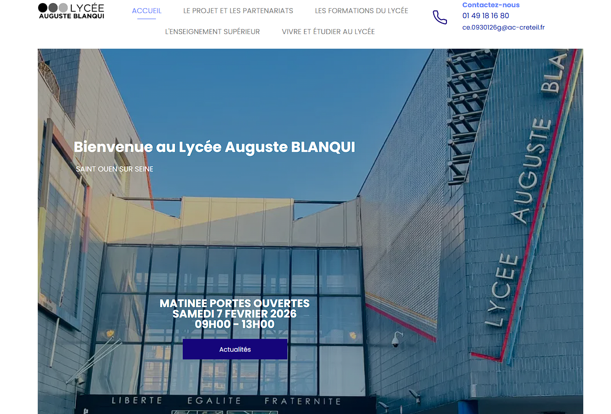

Biographie
GABIN Floralyn, 20 ans
Je suis actuellement étudiante en première année BTS SIO (Services Informatiques aux Organisations) du Lycée Auguste Blanqui à Saint-Ouen et diplômée d'un Baccalauréat avec une mention assez bien.
Ce portfolio a été conçu pour mettre en lumière les divers projets et études auxquels j'ai contribué tout au long de mon parcours.
Vous pouvez consulter ou télécharger mon CV dans la section dédiée. Pour toute prise de contact, rendez-vous dans la rubrique correspondante où toutes les informations nécessaires sont à votre disposition.

BTS SIO
Services Informatiques aux Organisations